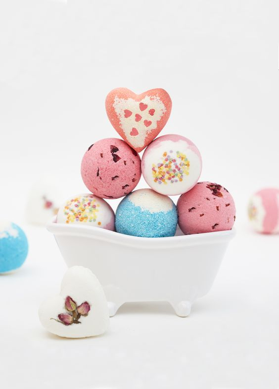

Ароматические бомбочки для ванны с более 20 различных ароматов
Хит сезона - бомбочка с ароматом карамели
Каталог:
Описание товара:
Бомбочки с ароматом Розы
Зимние бомбочки с ароматом Мандарина

Характеристики товара:
Бомбочки для ванны помогают расслабить тело и разум, очищает поры и смягчает кожу благодаря маслам в составе
Подробное описание товара:
Бомбочки для ванны – это спрессованные ароматные шарики, которые при попадании в воду начинают шипеть и бурлить, превращая стандартную гигиеническую процедуру в настоящий ритуал красоты. Необычное средство поможет расслабиться и получить удовольствие от купания.